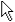
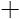
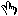
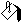
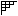
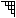

Short Name: Cursor
Requires: VI Scripting
Class: Picture Properties
To Use: Create a property.
Gets or sets the cursor you want to use when you move the mouse over a picture control.
This property sets the cursor for all picture controls of that type, including picture controls in other VIs. For example, if you use this property to set the cursor for a 2D picture control, LabVIEW uses that cursor setting for all 2D picture controls as long as LabVIEW is running.
After you use this property, consider resetting the value of the property to 0 when the VI stops running. Resetting the value of the property allows you to maintain the default cursor setting for picture controls in other VIs.
| 0 | Uses the default LabVIEW cursor. For example, if automatic tool selection is enabled and you move the cursor over a ring control, LabVIEW uses the cursor of the Operating tool. If you move the cursor over a string control, LabVIEW uses the cursor of the Labeling tool. |
| 1 |  (Windows) LabVIEW uses this system cursor. (Mac OS X and Linux) LabVIEW uses the system cursor that corresponds to this Windows cursor. |
| 2 | (Windows) LabVIEW uses this system cursor. (Mac OS X and Linux) LabVIEW uses the system cursor that corresponds to this Windows cursor. |
| 3 | (Windows) LabVIEW uses this system cursor. (Mac OS X and Linux) LabVIEW uses the system cursor that corresponds to this Windows cursor. |
| 4 |  (Windows) LabVIEW uses this system cursor. (Mac OS X and Linux) LabVIEW uses the system cursor that corresponds to this Windows cursor. |
| 5 | (Windows) LabVIEW uses this system cursor. (Mac OS X and Linux) LabVIEW uses the system cursor that corresponds to this Windows cursor. |
| 6 |  |
| 7 | |
| 8 | |
| 9 | |
| 10 | |
| 11 | |
| 12 | |
| 13 | |
| 14 | |
| 15 | |
| 16 |  |
| 17 | |
| 18 |  |
| 19 | |
| 20 |  |
| 21 | |
| 22 | |
| 23 | |
| 24 | |
| 25 | |
| 26 | |
| 27 | |
| 28 | |
| 29 | |
| 30 | |
| 31 | |
| 32 |
The following table lists the characteristics of this property.
| Data type |  |
| Permissions | Read/Write |
| Available in Run-Time Engine | Yes |
| Available in Real-Time Operating System | Yes |
| Settable when the VI is running | Yes |
| Loads the front panel into memory | No |
| Need to authenticate before use | No |
| Loads the block diagram into memory | No |
| Remote access allowed | Yes |